操作流程時間縮短
觀察使用者從進入頁面到完成指定任務的時間，操作流程平均時間由 90 秒降至 60 秒。
觀察使用者從進入頁面到完成指定任務的時間，操作流程平均時間由 90 秒降至 60 秒。
可用性測試顯示，優化後使用者在相同任務中的完成比例大幅提升。
與 CS 團隊合作，分析使用者錯誤回報數據，發現曾經回報的問題幾乎都沒有再次回報。
搭配 GA 工具查看改版前後的數據，發現新版頁面停留率提升，跳出率下降 20%。
從 4 步縮減為 3 步，但將照片上傳整合至編輯頁，大幅減少來回操作讓流程更流暢直覺。
彙整 CS 回饋與用戶問卷，近 9 成回饋出現「容易使用」、「流程清楚」等關鍵字，驗證優化成效。
產品服務｜點點印推出的線上編輯器，會員用戶可透過此平台製作各式產品，例如相片書、卡片、邀請卡、婚禮書約與精裝寫真本等，讓使用者能輕鬆完成編輯，並一鍵下單印製專屬作品。
Team | TinTint 點點印
Role | UI/UX Designer
Collaborators | PM(1)・FE(1)・BE(1)・CS(3)
因應編輯器需全面更新至新版設計風格系統，我們將此專案視為契機，重新檢視舊版在操作不便與視覺過時上的問題。
作為此專案的 UI UX 設計師，我透過使用者訪談、競品分析與CS團隊提供的用戶回饋，建立 Personas 與 User Story Map，釐清核心需求與痛點。根據研究結果，重整資訊架構與操作流程，並制定新版 Wireframe、UI Flow 與設計系統。最後透過原型測試與易用性驗證，確保新版設計不僅解決舊有問題，也讓整體介面更直覺、現代化。
✦ Empathy Map
✦ Personas
✦ User Story Maps
✦ Interview Method
✦ Competitive Audit
✦ Value Proposition
✦ Information Architecture
✦ Story Board
✦ User Flow
✦ Wireframe
✦ Lo-Fi Prototype
✦ Usability Test
✦ Visual Design System
✦ UI Kit
✦ Mockup
✦ Usability Test
✦ QA
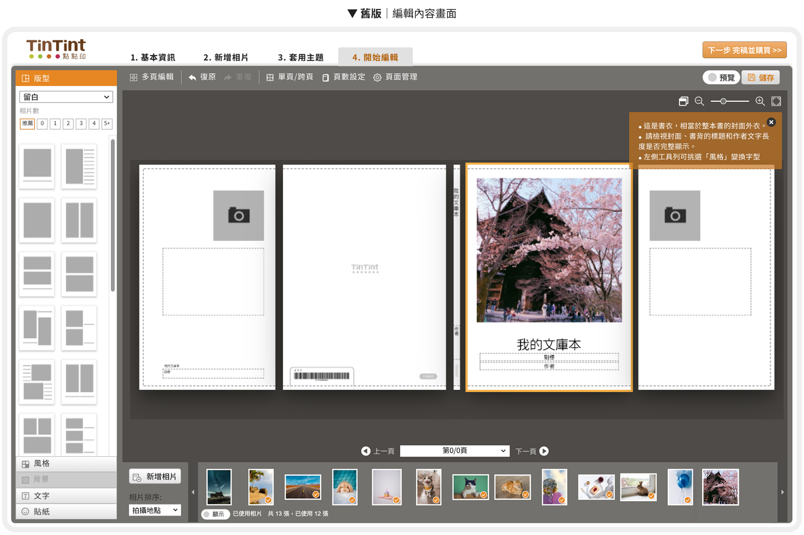
我們發現使用者在操作過程中常遇到三大問題：難以快速找到所需資訊、學習成本高、操作流程不直覺。為了釐清根源，我們結合 Personas、Empathy Map 與 User Story Map，具體描繪出不同角色在編輯過程中的需求與行為痛點，並透過用戶訪談與實際操作觀察驗證假設，例如「照片上傳流程過於繁瑣」與「功能按鈕分散導致視線頻繁切換」。
根據分析結果，我們針對核心功能進行優化：
這些設計有效降低了使用者的認知負擔，提升操作流暢度，讓編輯流程更直覺，也讓新手能更快上手。
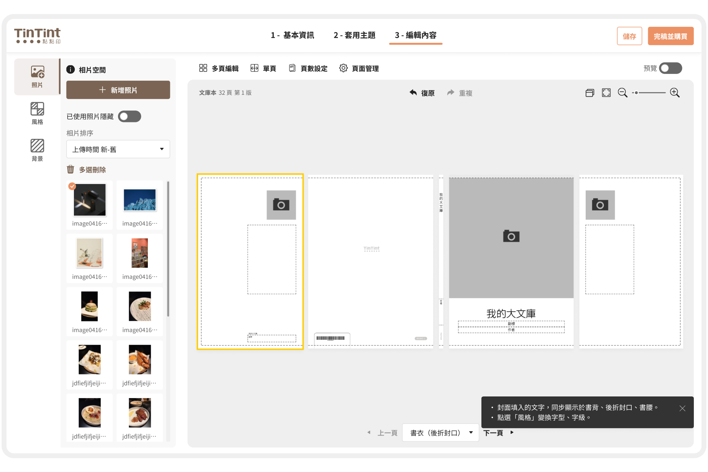
在視覺設計前，先盤點並統整功能規格，解決不一致處並建立資訊架構，協助團隊快速理解產品結構。透過 UI Flow 視覺化頁面路徑，確保體驗一致與流程順暢。
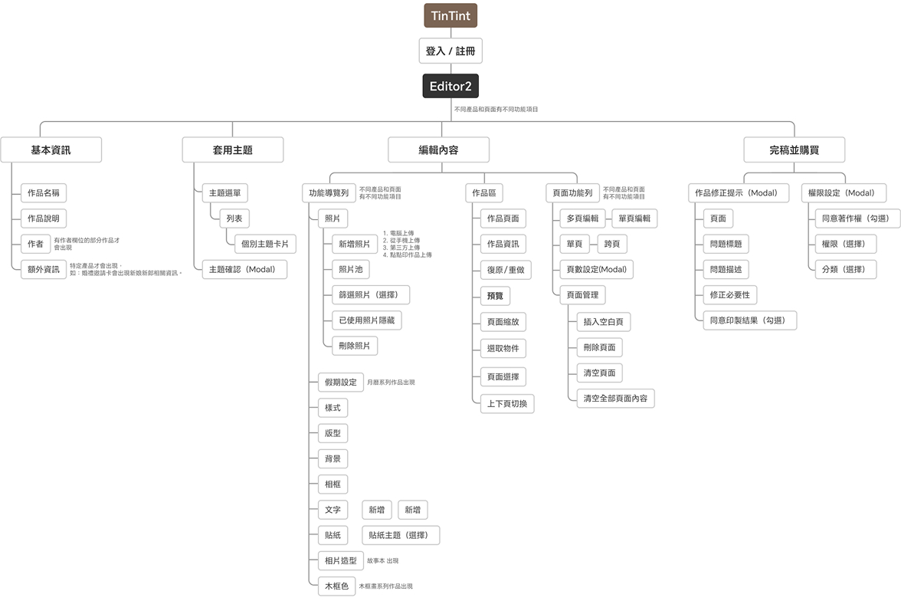
在釐清專案目標後，我繪製優化前後的 User Flow，標示關鍵調整點，協助團隊建立共識。例如在照片新增流程中，將原本繁瑣的操作改為可直接於編輯區上傳與替換，讓流程更直覺精簡。
同時依不同產品功能與需求持續微調流程節點，確保設計符合實際情境並提前排除潛在問題。
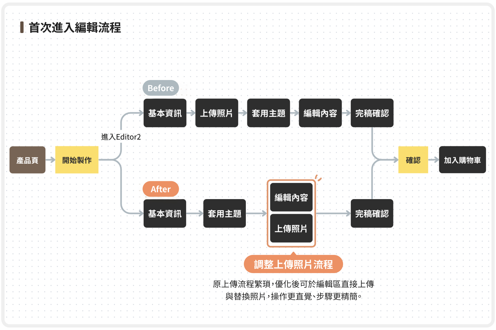
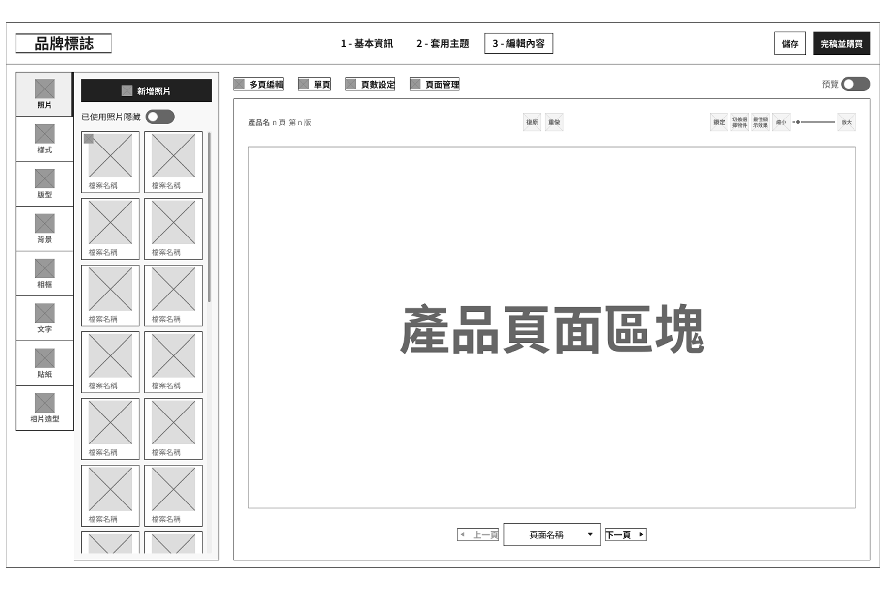
為確保 Editor2 的複雜功能能直覺化，我利用 Figma 線框圖標註核心功能模組，將複雜邏輯具象化。透過低保真原型與團隊進行快速迭代，確保在視覺開發前，功能架構已獲得充分討論並達成共識，從而實現高效率的開發協作。
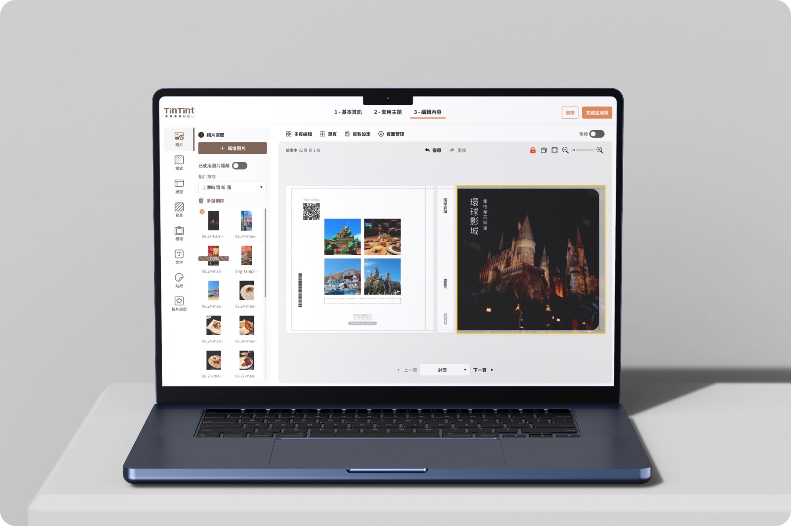
基本資訊
新增相片
套用主題
開始編輯
基本資訊
套用主題
開始編輯 + 上傳照片
在編輯畫面可直接上傳照片
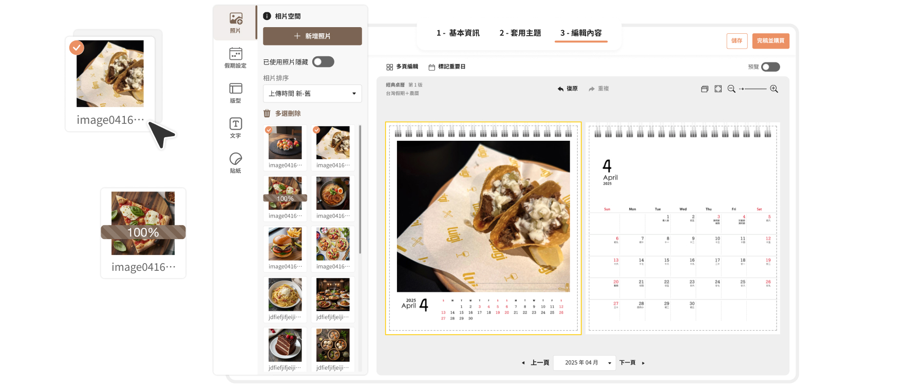
▍步驟式的引導：首次創建作品的遞進引導，使用者可以清楚知道一步步要怎麼編輯作品。
▍重整資訊架構：將關聯性較高的分區，讓使用者可以依序填入對應內容。
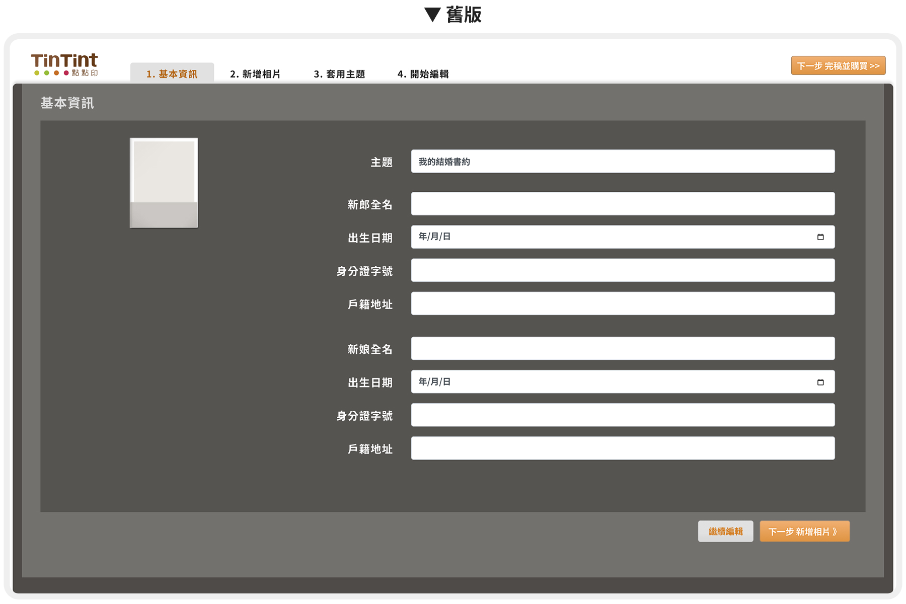
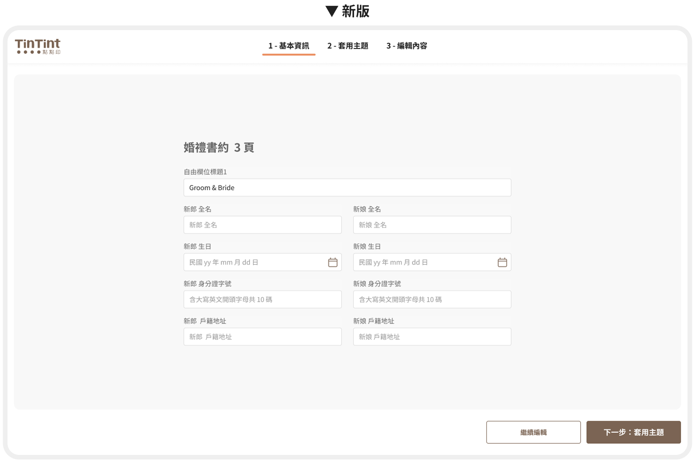
引導使用者先輸入已知的內容，系統會自動將資訊匯入，讓使用者在進入編輯畫面時，無需逐一點擊輸入框新增或更新資訊，大幅提升操作效率。
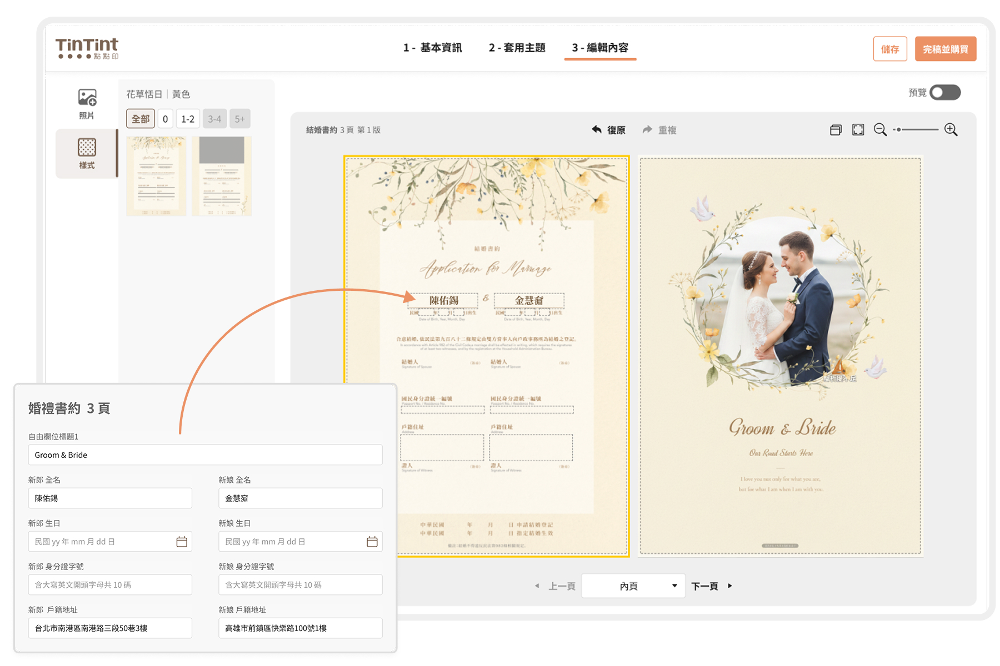
調整按鈕配置，使畫面聚焦在「下一步：編輯內容」，移除原本的「繼續編輯」及 Header 中的「完稿並購買」，統一至編輯內容頁面後才能進行最終確認與購買，提高操作一致性與流暢度。
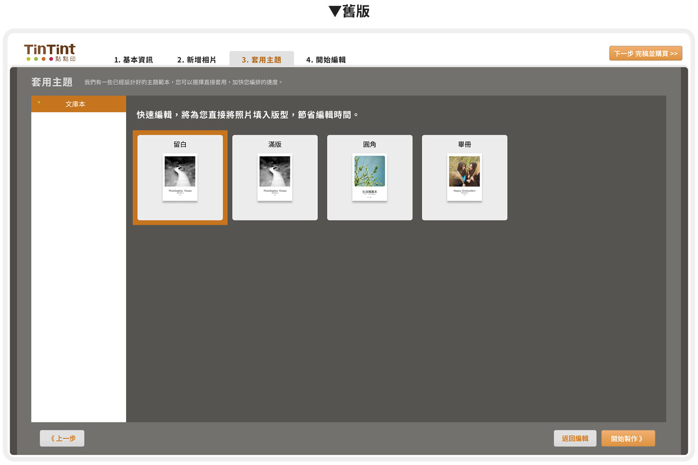
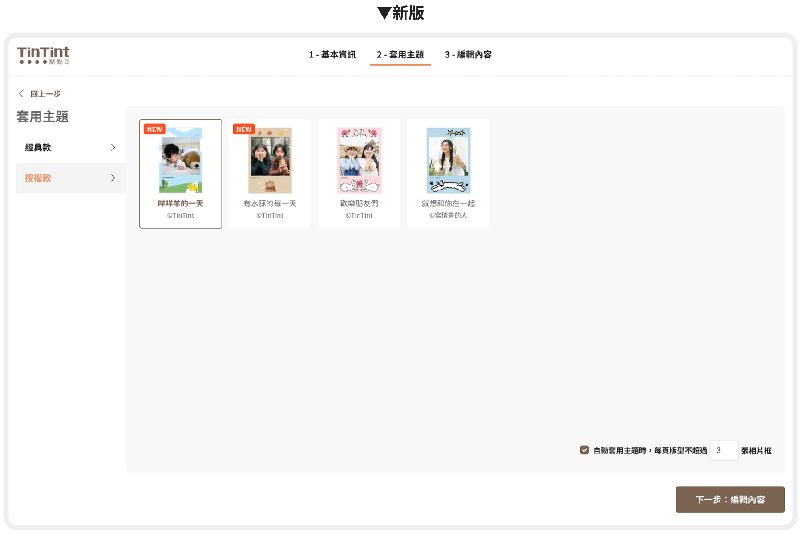
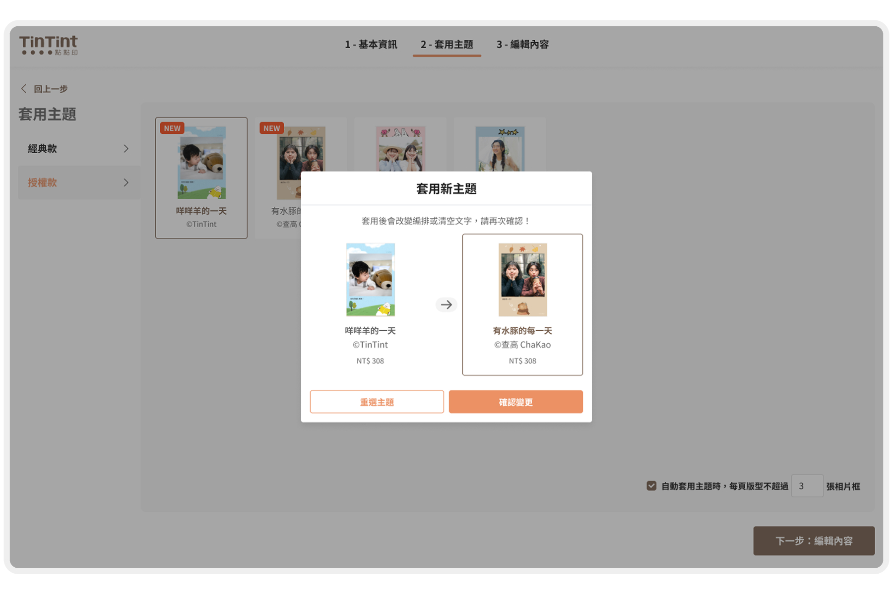
首次套用或切換主題時，系統皆會跳出確認視窗，提醒使用者再次確認是否套用或變更版型，避免誤套錯誤版型並減少內容誤改，讓操作更安心。
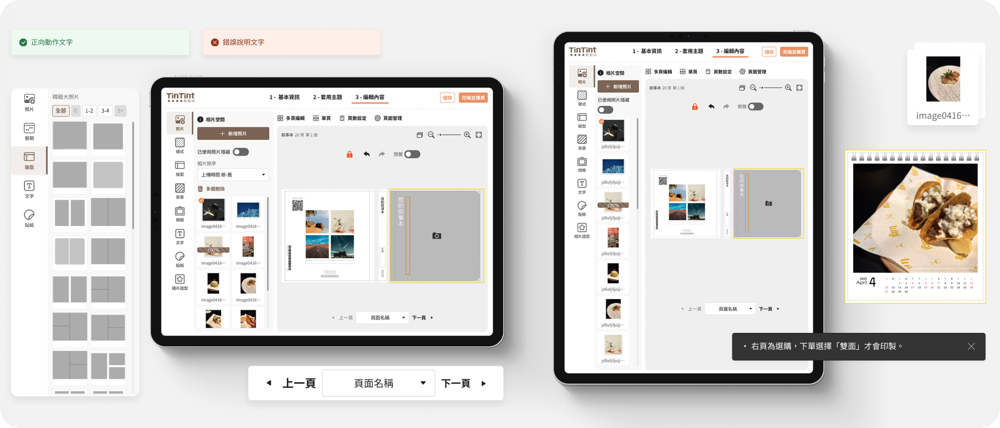
[Before]
功能依產品類型分散在上下區域，使用者需頻繁移動視線。排列方式偏向技術邏輯，缺乏任務導向，增加理解難度。
[After]
以編輯情境為核心重新分群，相關功能集中於編輯區上方。任務導向的整合方式讓操作更直覺，減少混淆與誤操作。
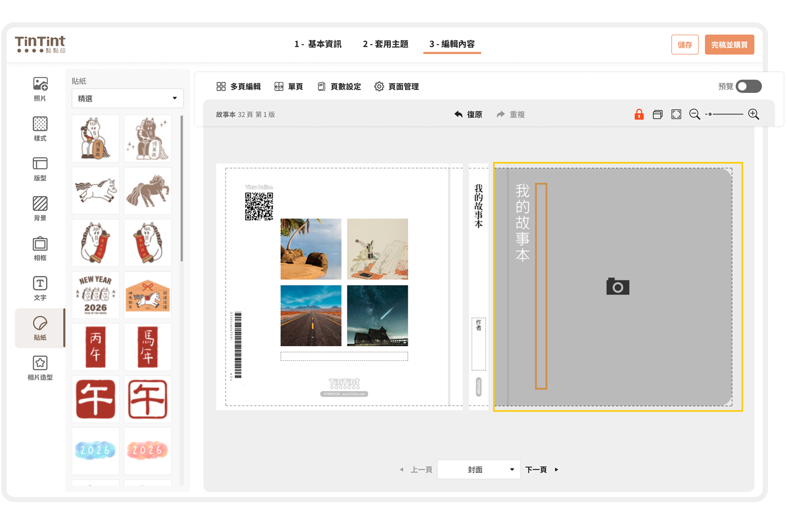

使用者進入編輯畫面時，即可看到圖文並茂的教學提示，協助快速理解新功能或關鍵操作。提示內容會依產品性質動態調整，提供最相關的引導資訊。
在需要額外輔助說明的頁面，右下角會出現提示框於畫面最上層，提醒使用者關鍵操作或注意事項，並可在閱讀後自由關閉。
針對操作較複雜的功能，透過 Tooltip 提供用途與操作方式的提示，並附上「知道了」按鈕，方便使用者自行關閉。

統一文字框、QR Code、相片框等各類 Toolbar 與 Modal 元件，建立一致的視覺語言，強化介面整體性。
使用者可於同一視窗調整文字、顏色、對齊與字型等設定，補足原需分步操作的限制，提升操作效率與彈性。
將照片管理功能固定於左側邊欄，解決舊版底部配置分散且佔空間的問題。透過直列排列顯示更多照片，並能同時查看上傳進度，不僅降低了使用者的搜尋成本，也讓小螢幕的操作空間更整潔、瀏覽體驗更直覺流暢。
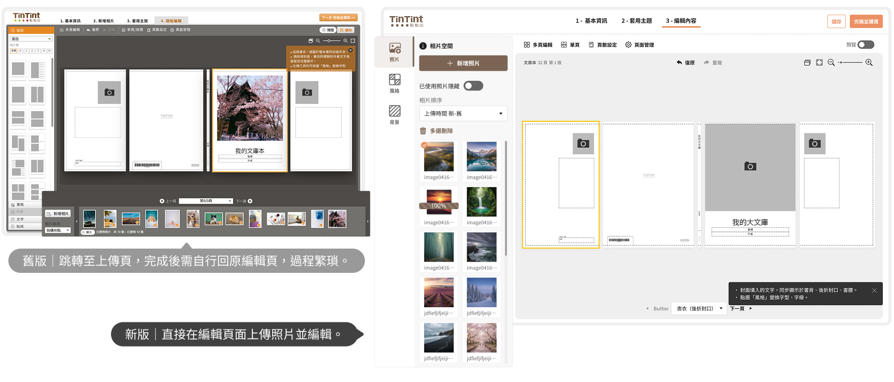


Before
介面元素較密集，顏色較重，資訊層次不夠明顯，且視線需要來回移動，增加認知負擔。
After
採用更明確的分區設計
Before
採用深灰與橘色的深色背景，並透過漸層營造立體感，但強烈的色彩對比容易造成視覺疲勞，同時功能區塊之間的區隔不夠明顯。
After
Before
版面呈現早期網頁設計風格，以銳利邊角與硬性分隔為主，缺乏柔和的視覺層次。
After
Before
按鈕與文字區塊稍顯擁擠，字體大小與間距略小，導致可讀性較差。
After


先將各類可能會發生的情境列出，並設計不同情境下的元件樣式。


這次改版讓我體會到 UX 的核心在於解決痛點而非僅美化介面。我針對資訊架構與操作不順，重整照片區域、優化視覺層次與配色，並調整功能列以降低認知負擔。
與使用者訪談時，我學到關鍵不僅在詢問需求，而是透過開放式提問挖掘真實痛點。像部分用戶覺得介面「不好用」，實際原因是照片管理分散，需頻繁切換視窗。
在優化介面過程中，我體會到資訊架構對使用行為的影響。新版統一照片管理區域位置，減少視線移動，並透過色彩與間距強調主要功能，讓操作更順暢直覺。
除了操作不順外，我也思考使用者為何會誤操作或忽略步驟。像舊版按鈕間距過小導致誤點，問題不在用戶而是設計需優化，讓我更關注降低認知負擔與提升操作直覺性。
與開發與產品團隊合作時，我學會以明確邏輯表達設計需求，確保開發能準確實作。以「拖拉照片排序」為例，我運用流程圖與互動示意協助團隊快速對齊，降低溝通與修改成本。